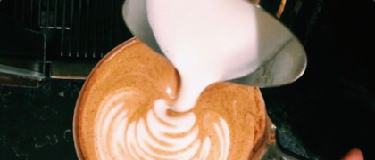
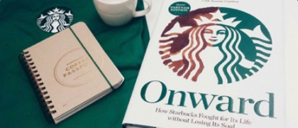
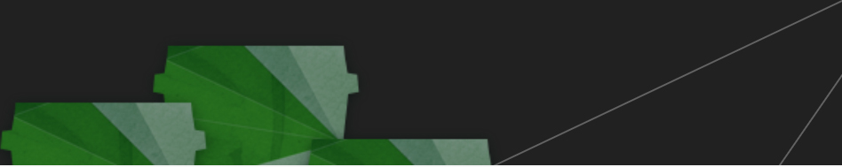

- 门店
- 我的账户

关于星巴克
星巴克在中国
工作机会
联系我们

- 啡快™ － 在线点 到店取
- 专星送™
- 帮助中心
 沪公网安备 31010402000318号
沪公网安备 31010402000318号
有一个机会，成为星巴克伙伴
连接更广阔的世界
加入星巴克大家庭，和我们一起工作，让我们与你一起成长，创造无限可能。在星巴克工作意味着一个获得超越简单雇佣关系的机会，成为我们的伙伴。我们在这里和你一起成长，成为一个更好的人，实现更大的目标，在你面前的正是无限可能。你可以在星巴克实现更多、成就更多，并且成为最好的自己。就在这里认同自己的价值然后去发现一个更大更有意义的世界。

零售门店
华东区域
其他区域

支持中心
华东区域
其他区域
中国总部

关于星巴克
伙伴文化
有一个机会成为星巴克的伙伴
我们的使命
激发并孕育人文精神——每人、每杯、每个社区
伙伴·同行
- 在星巴克，我们称彼此为伙伴，伙伴们一起共享在星巴克的无限机会，伙伴们一起实现更多、成就更多
- 在星巴克，连接更广阔的世界、做最好的自己、成就非凡事业，让每一天都充满意义地连接彼此、成就自己
咖啡文化
- 星巴克的咖啡文化不仅是延续传统传播咖啡文化，还传递情感联系
- 始于对咖啡的热爱，星巴克从西雅图出发到如今遍布世界各地，让更多的人享受到高品质的咖啡
- 同样始于对咖啡的热爱，星巴克伙伴们从祖国各地汇聚在门店，将这份咖啡之爱传递到更广阔的天地
- 星巴克提供了诸多机会让伙伴们得以提高咖啡技能，围裙的不同颜色代表从咖啡探索者到咖啡公使的不同咖啡技能等级
选择星巴克
雇主赞誉
- 星巴克不只是一家“咖啡”公司更是一家和“人”有关的公司
- 星巴克是咖啡知识和专业技能方面的领导者，同样对伙伴的重视星巴克一样走在前列
- 星巴克重视并认可伙伴们的持续贡献与持续投入，致力于帮助他们实现个人和职业梦想。伙伴们拥有“咖啡豆股票”的权益并享有“助房津贴计划”、“咖啡星享假期”和“父母关爱计划”等福利
- 星巴克的努力得到了业界的赞誉与认可，并因此获得多个机构颁发的最佳雇主荣誉（多次被Aon、Universum、LinkedIn等机构评选为中国最佳雇主、中国最具吸引力雇主、中国典范雇主等）
全面薪酬
我们的伙伴无论全职还是兼职（每周20小时或以上），都可以享受一系列的薪酬福利项目。根据工作职位和个人情况的不同，伙伴的全面薪酬福利包括：
- 不断增长的薪资
- 额外的人寿保险
- 医疗保险
- 股票期权（咖啡豆股票)
- 助房津贴计划
- 咖啡星享假期
- 父母关爱计划
- 管理奖金计划
- 咖啡饮料伙伴券
星巴克大学 | 伙伴们的专属咖啡大学
- 星巴克中国大学（Starbucks China University）为伙伴们设计了个性化的学习与发展道路
- 希望通过这些努力，与每一个星巴克伙伴分享每一个机会的乐趣，迎接每一个机会的挑战
- 作为星巴克伙伴，你可以在SCU选择不同的课程进行学习，打造你在关键领域的专业能力，你的每一次学习都将向你想要的未来更进一步
- 零售学院
- 领导力学院
- 咖啡与文化学院
- 专业职能学院